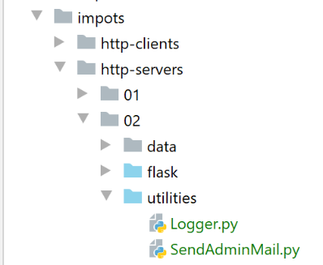
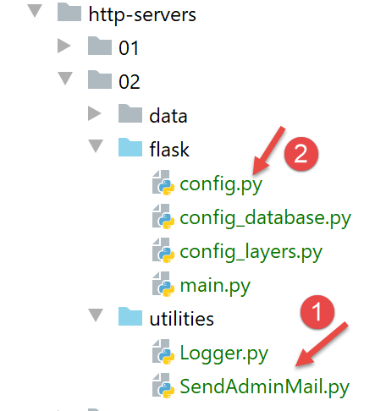
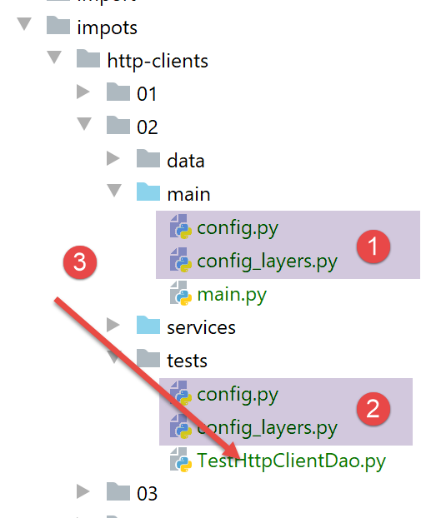

24. Exercice d’application : version 7
24.1. Introduction
La version 7 de l’application de calcul de l’impôt est identique à la version 6 aux détails près suivants :
- le client web va lancer simultanément plusieurs requêtes HTTP. Dans la version précédente ces requêtes étaient lancées séquentiellement. Le serveur ne traitait alors à tout moment qu’une unique requête ;
- le serveur sera multi-threadé : il pourra traiter plusieurs requêtes simultanément ;
- pour suivre l’exécution de ces requêtes, on va doter le serveur web d’un logueur avec lequel on loguera dans un fichier texte les moments importants du traitement des requêtes ;
- le serveur enverra un mail à l’administrateur de l’application lorsqu’il rencontrera un problème qui l’empêchera de se lancer, typiquement un problème avec la base de données associée au serveur web ;
L’architecture de l’application ne change pas :

L’arborescence des scripts est la suivante :

Le dossier [http-servers/02] est d’abord obtenue par recopie du dossier [http-servers/01]. On y fait ensuite des modifications.
24.2. Les utilitaires

24.2.1. La classe [Logger]
La classe [Logger] va permettre de loguer dans un fichier texte certaines actions du serveur web :
import codecs
import threading
from datetime import date, datetime
from threading import current_thread
from ImpôtsError import ImpôtsError
class Logger:
# attribut de classe
verrou = threading.RLock()
# constructeur
def __init__(self, logs_filename: str):
try:
# on ouvre le fichier en mode append (a)
self.__resource = codecs.open(logs_filename, "a", "utf-8")
except BaseException as erreur:
raise ImpôtsError(18, f"{erreur}")
# écriture d'un log
def write(self, message: str):
# date / heure du moment
today = date.today()
now = datetime.time(datetime.now())
# nom du thread
thread_name = current_thread().name
# on ne veut pas être dérangé pendant qu'on écrira dans le fichier de logs
# on demande l'objet de synchronisation (= le verrou) de la classe - un seul thread l'obtiendra
Logger.verrou.acquire()
try:
# écriture du log
self.__resource.write(f"{today} {now}, {thread_name} : {message}")
# écriture immédiate - sinon le texte ne sera écrit que lors de la fermeture du flux d'écriture
# or on veut suivre les logs dans le temps
self.__resource.flush()
finally:
# on libère l'objet de synchronisation (= le verrou) pour qu'un autre thread puisse l'obtenir
Logger.verrou.release()
# libération des ressources
def close(self):
# fermeture du fichier
if self.__resource:
self.__resource.close()
- lignes 10-11 : on définit un attribut de classe. Un attribut de classe est une propriété partagée par toutes les instances de la classe. On la référence par la notation [Classe.attribut_de_classe] (lignes 30, 39). L’attribut de classe [verrou] sera un objet de synchronisation pour tous les threads exécutant le code des lignes 31-36 ;
- lignes 14-19 : le constructeur reçoit le nom absolu du fichier de logs. Ce fichier est alors ouvert et le descripteur de fichier récupéré est mémorisé dans la classe ;
- ligne 17 : le fichier de logs est ouvert en mode ‘append’ (a). Chaque ligne écrite le sera à la fin du fichier ;
- lignes 22-39 : la méthode [write] permet d’écrire dans le fichier de logs un message passé en paramètre. A celui-ci sont accolées deux informations :
- ligne 24 : la date du jour ;
- ligne 25 : l’heure du moment ;
- ligne 27 : le nom du thread qui écrit le log. Il ne faut pas oublier ici qu’une application web sert plusieurs utilisateurs à la fois. Toute requête se voit attribuer un thread pour l’exécuter. Si ce thread est mis en pause, typiquement pour une opération d’ entrée / sortie (réseau, fichiers, base de données), alors le processeur sera donné à un autre thread. A cause de ces interruptions possibles, on ne peut pas être sûrs qu’un thread va réussir à écrire une ligne dans le fichier de logs sans être interrompu. On risque alors de voir des logs de deux threads différents se mélanger. Le risque est faible, peut-être même nul, mais on a néanmoins décidé de montrer comment synchroniser l’accès de deux threads à une ressource commune, ici le fichier de logs ;
- ligne 30 : avant d’écrire, le thread demande la clé de la porte d’entrée. La clé demandée est celle créée ligne 11. Elle est effectivement unique : un attribut de classe est unique pour toutes les instances de la classe ;
- au temps T1, un thread Thread1 obtient la clé. Il peut alors exécuter la ligne 33 ;
- au temps T2, le thread Thread1 est mis en pause avant même d’avoir terminé l’écriture du log ;
- au temps T3, le thread Thread2 qui a obtenu le processeur doit lui aussi écrire un log. Il arrive ainsi à la ligne 30 où il demande la clé de la porte d’entrée. On lui répond qu’un autre thread l’a déjà. Il est alors automatiquement mis en pause. Il en sera ainsi de tous les threads qui demanderont cette clé ;
- au temps T4, le thread Thread1 qui avait été mis en pause retrouve le processeur. Il termine alors l’écriture du log ;
- lignes 32-36 : l’écriture dans le fichier de logs se fait en deux temps :
- ligne 33 : le descripteur de fichier obtenu ligne 17 travaille avec un buffer. L’opération [write] de la ligne 33 écrit dans ce buffer mais pas directement dans le fichier. Le buffer est ensuite vidé dans le fichier dans certaines conditions : - le buffer est plein ; - le descripteur de fichier subit une opération [close] ou [flush] ;
- ligne 36 : on force l’écriture de la ligne de log dans le fichier. On fait cela parce qu’on veut voir s’intercaler entre eux les logs des différents threads. Si on ne fait pas ça, les logs d’un thread seront tous écrits en même temps lors de la fermeture du descripteur, ligne 45. Il serait alors beaucoup plus difficile de voir que certains threads ont été arrêtés : il faudrait regarder les heures dans les logs ;
- ligne 39 : le thread Thread1 rend la clé qu’on lui avait donnée. Elle va pouvoir être donnée à un autre thread ;
- ligne 22 : la méthode [write] est donc synchronisée : un seul thread à la fois écrit dans le fichier de logs. La clé du dispositif est la ligne 30 : quoiqu’il arrive, seul un thread récupère la clé de passage à la ligne suivante. Il la garde tant qu’il ne la rend pas (ligne 39) ;
- lignes 41-45 : la méthode [close] permet de libérer les ressources allouées au descripteur du fichier de logs ;
Les logs écrits dans le fichier de logs auront l’allure suivante :
24.2.2. La classe [SendAdminMail]
La classe [SendAminMail] permet d’envoyer un message à l’administrateur de l’application lorsque celle-ci ‘plante’.

La classe [SendAdminMail] est configurée dans le script [config] [2] de la façon suivante :
# config serveur SMTP
"adminMail": {
# serveur SMTP
"smtp-server": "localhost",
# port du serveur SMTP
"smtp-port": "25",
# administrateur
"from": "guest@localhost.com",
"to": "guest@localhost.com",
# sujet du mail
"subject": "plantage du serveur de calcul d'impôts",
# tls à True si le serveur SMTP requiert une autorisation, à False sinon
"tls": False
}
La classe [SendAdminMail] reçoit le dictionnaire des lignes 2-13 ainsi que la configuration de l’envoi du mail. La classe est la suivante :
# imports
import smtplib
from email.mime.text import MIMEText
from email.utils import formatdate
class SendAdminMail:
# -----------------------------------------------------------------------
@staticmethod
def send(config: dict, message: str, verbose: bool = False):
# envoie message au serveur smtp config['smtp-server'] sur le port config[smtp-port]
# si config['tls'] est vrai, le support TLS sera utilisé
# le mail est envoyé de la part de config['from']
# pour le destinataire config['to']
# le message a le sujet config['subject']
# on trouve la référence d'un logueur dans config['logger']
# on récupère le logueur dans la config - peut être égal à None
logger = config["logger"]
# serveur SMTP
server = None
# on envoie le message
try:
# le serveur SMTP
server = smtplib.SMTP(config["smtp-server"])
# mode verbose
server.set_debuglevel(verbose)
# connexion sécurisée ?
if config['tls']:
# début dialogue de sécurisation
server.starttls()
# authentification
server.login(config["user"], config["password"])
# construction d'un message Multipart - c'est ce message qui sera envoyé
msg = MIMEText(message)
msg['From'] = config["from"]
msg['To'] = config["to"]
msg['Date'] = formatdate(localtime=True)
msg['Subject'] = config["subject"]
# on envoie le message
server.send_message(msg)
# log - le logger peut ne pas exister
if logger:
logger.write(f"[SendAdminMail] Message envoyé à [{config['to']}] : [{message}]\n")
except BaseException as erreur:
# log- le logger peutne pas exister
if logger:
logger.write(
f"[SendAdminMail] Erreur [{erreur}] lors de l'envoi à [{config['to']}] du message [{message}] : \n")
finally:
# on a fini - on libère les ressources mobilisées par la fonction
if server:
server.quit()
- lignes 24-54 : on retrouve le code déjà étudié dans l’exemple |smtp/02| ;
- ligne 20 : on récupère la référence d’un logueur. Celui-ci est utilisé aux lignes 45 et 49 ;
24.3. Le serveur web
24.3.1. Configuration
La configuration du serveur est très semblable à celle du serveur étudié précédemment. Seul le fichier [config.py] évolue légèrement :
def configure(config: dict) -> dict:
import os
# étape 1 ------
# dossier de ce fichier
script_dir = os.path.dirname(os.path.abspath(__file__))
# chemin racine
root_dir = "C:/Data/st-2020/dev/python/cours-2020/python3-flask-2020"
# dépendances absolues
absolute_dependencies = [
# dossiers du projet
# BaseEntity, MyException
f"{root_dir}/classes/02/entities",
# InterfaceImpôtsDao, InterfaceImpôtsMétier, InterfaceImpôtsUi
f"{root_dir}/impots/v04/interfaces",
# AbstractImpôtsdao, ImpôtsConsole, ImpôtsMétier
f"{root_dir}/impots/v04/services",
# ImpotsDaoWithAdminDataInDatabase
f"{root_dir}/impots/v05/services",
# AdminData, ImpôtsError, TaxPayer
f"{root_dir}/impots/v04/entities",
# Constantes, tranches
f"{root_dir}/impots/v05/entities",
# IndexController
f"{root_dir}/impots/http-servers/01/controllers",
# scripts [config_database, config_layers]
script_dir,
# Logger, SendAdminMail
f"{script_dir}/../utilities",
]
# on fixe le syspath
from myutils import set_syspath
set_syspath(absolute_dependencies)
# étape 2 ------
# configuration de l'application
config.update({
# utilisateurs autorisés à utiliser l'application
"users": [
{
"login": "admin",
"password": "admin"
}
],
# fichier de logs
"logsFilename": f"{script_dir}/../data/logs/logs.txt",
# config serveur SMTP
"adminMail": {
# serveur SMTP
"smtp-server": "localhost",
# port du serveur SMTP
"smtp-port": "25",
# administrateur
"from": "guest@localhost.com",
"to": "guest@localhost.com",
# sujet du mail
"subject": "plantage du serveur de calcul d'impôts",
# tls à True si le serveur SMTP requiert une autorisation, à False sinon
"tls": False
},
# durée pause thread en secondes
"sleep_time": 0
})
# étape 3 ------
# configuration base de données
import config_database
config["database"] = config_database.configure(config)
# étape 4 ------
# instanciation des couches de l'application
import config_layers
config['layers'] = config_layers.configure(config)
# on rend la configuration
return config
- lignes 40-66 : on ajoute dans le dictionnaire de configuration du serveur, les éléments concernant le logueur (ligne 49) et celles concernant l’envoi d’un mail d’alerte à l’administrateur de l’application (lignes 51-63) ;
- ligne 65 : pour mieux voir les threads en action on va imposer à certains de s’arrêter. [sleep_time] est la durée de l’arrêt exprimée en secondes ;
- lignes 27-28 : on notera qu’on utilise le contrôleur [index_controller] de la version 6 précédente ;
24.3.2. Le script principal [main]
Le script principal [main] est le suivant :
# on attend un paramètre mysql ou pgres
import sys
syntaxe = f"{sys.argv[0]} mysql / pgres"
erreur = len(sys.argv) != 2
if not erreur:
sgbd = sys.argv[1].lower()
erreur = sgbd != "mysql" and sgbd != "pgres"
if erreur:
print(f"syntaxe : {syntaxe}")
sys.exit()
# on configure l'application
import config
config = config.configure({'sgbd': sgbd})
# dépendances
from flask import request, Flask
from flask_httpauth import HTTPBasicAuth
import json
import index_controller
from flask_api import status
from SendAdminMail import SendAdminMail
from myutils import json_response
from Logger import Logger
import threading
import time
from random import randint
from ImpôtsError import ImpôtsError
# gestionnaire d'authentification
auth = HTTPBasicAuth()
@auth.verify_password
def verify_password(login, password):
# liste des utilisateurs
users = config['users']
# on parcourt cette liste
for user in users:
if user['login'] == login and user['password'] == password:
return True
# on n'a pas trouvé
return False
# envoi d'un mail à l'administrateur
def send_adminmail(config: dict, message: str):
# on envoie un mail à l'administrateur de l'application
config_mail = config["adminMail"]
config_mail["logger"] = config['logger']
SendAdminMail.send(config_mail, message)
# vérification du fichier de logs
logger = None
erreur = False
message_erreur = None
try:
# logueur
logger = Logger(config["logsFilename"])
except BaseException as exception:
# log console
print(f"L'erreur suivante s'est produite : {exception}")
# on note l'erreur
erreur = True
message_erreur = f"{exception}"
# on mémorise le logueur dans la config
config['logger'] = logger
# gestion de l'erreur
if erreur:
# mail à l'administrateur
send_adminmail(config, message_erreur)
# fin de l'application
sys.exit(1)
# log de démarrage
log = "[serveur] démarrage du serveur"
logger.write(f"{log}\n")
print(log)
# récupération des données de l'administration fiscale
erreur = False
try:
# admindata sera une donnée de portée application en lecture seule
config["admindata"] = config["layers"]["dao"].get_admindata()
# log de réussite
logger.write("[serveur] connexion à la base de données réussie\n")
except ImpôtsError as ex:
# on note l'erreur
erreur = True
# log d'erreur
log = f"L'erreur suivante s'est produite : {ex}"
# console
print(log)
# fichier de logs
logger.write(f"{log}\n")
# mail à l'administrateur
send_adminmail(config, log)
# le thread principal n'a plus besoin du logger
logger.close()
# s'il y a eu erreur on s'arrête
if erreur:
sys.exit(2)
# l'application Flask peut démarrer
app = Flask(__name__)
# Home URL
@app.route('/', methods=['GET'])
@auth.login_required
def index():
…
# main uniquement
if __name__ == '__main__':
# on lance le serveur
app.config.update(ENV="development", DEBUG=True)
app.run(threaded=True)
- lignes 1-10 : le script attend un paramètre [mysql / pgres] qui lui indique le SGBD à utiliser ;
- lignes 12-14 : l’application est configurée (Python Path, couches, base de données) ;
- lignes 16-28 : les dépendances nécessaires à l’application ;
- lignes 30-43 : gestion de l’authentification ;
- lignes 46-51 : une fonction qui envoie un mail à l’administrateur de l’application ;
- la fonction attend deux paramètres :
- config : un dictionnaire ayant les clés [adminMail] et [logger] ;
- le message à envoyer ;
- lignes 49-50 : on prépare la configuration de l’envoi ;
- on envoie le mail ;
- lignes 54-74 : on vérifie la présence du fichier de logs ;
- ligne 70-74 : si on n’a pas réussi à ouvrir le fichier de logs, on envoie un mail à l’administrateur et on s’arrête ;
- lignes 76-79 : on logue le démarrage du serveur ;
- lignes 81-98 : on va chercher les données de l’administration fiscale en base de données ;
- lignes 88-98 : si on n’a pas réussi à obtenir ces données, on logue l’erreur aussi bien sur la console que dans le fichier de logs ;
- lignes 100-101 : le thread principal ne fera plus de logs (les threads créés n’utiliseront pas le même descripteur de fichier) ;
- lignes 103-105 : si on n’a pas pu se connecter à la base de données, on s’arrête ;
- ligne 122 : on lance le serveur en mode multithreadé ;
La fonction [index] (ligne 114) est la suivante :
# Home URL
@app.route('/', methods=['GET'])
@auth.login_required
def index():
logger = None
try:
# logger
logger = Logger(config["logsFilename"])
# on le mémorise dans une config associée au thread
thread_config = {"logger": logger}
thread_name = threading.current_thread().name
config[thread_name] = {"config": thread_config}
# on logue la requête
logger.write(f"[index] requête : {request}\n")
# on interrompt le thread si cela a été demandé
sleep_time = config["sleep_time"]
if sleep_time != 0:
# la pause est aléatoire pour que certains threads soient interrompus et d'autres pas
aléa = randint(0, 1)
if aléa == 1:
# log avant pause
logger.write(f"[index] mis en pause du thread pendant {sleep_time} seconde(s)\n")
# pause
time.sleep(sleep_time)
# on fait exécuter la requête par un contrôleur
résultat, status_code = index_controller.execute(request, config)
# y-a-t-il eu une erreur fatale ?
if status_code == status.HTTP_500_INTERNAL_SERVER_ERROR:
# on envoie un mail à l'administrateur de l'application
config_mail = config["adminMail"]
config_mail["logger"] = logger
SendAdminMail.send(config_mail, json.dumps(résultat, ensure_ascii=False))
# on logue la réponse
logger.write(f"[index] {résultat}\n")
# on envoie la réponse
return json_response(résultat, status_code)
except BaseException as erreur:
# on logue l'erreur si c'est possible
if logger:
logger.write(f"[index] {erreur}")
# on prépare la réponse au client
résultat = {"réponse": {"erreurs": [f"{erreur}"]}}
# on envoie la réponse
return json_response(résultat, status.HTTP_500_INTERNAL_SERVER_ERROR)
finally:
# on ferme le fichier de logs s'il a été ouvert
if logger:
logger.close()
- ligne 4 : la fonction exécutée lorsqu’un utilisateur demande l’URL /. Parce que le serveur est multi-threadé (ligne 112), un thread va être créé pour exécuter la fonction. Ce thread peut à tout moment être interrompu et mis en pause pour reprendre son exécution un peu plus tard. Il faut toujours se souvenir de ce point lorsque le code accède à une ressource partagée par tous les threads. Une telle ressource est ici le fichier de logs : tous les threads écrivent dedans ;
- ligne 8 : on crée une instance de logueur. Donc tous les threads auront une instance différence du logueur. Néanmoins tous ces logueurs pointent sur le même fichier de logs. Il est quand même important de noter que lorsqu’un thread ferme son logueur, cela n’a pas d’incidence sur les logueurs des autres threads ;
- lignes 9-12 : on mémorise le logueur dans le dictionnaire [config] de l’application associé à une clé portant le nom du thread. Ainsi s’il y a n threads exécutés simultanément, on aura la création de n entrées dans le dictionnaire [config]. [config] est une ressource partagée entre tous les threads. Il peut donc y avoir un besoin de synchronisation. J’ai fait ici une hypothèse. J’ai supposé que si deux threads créaient simultanément leur entrée dans le fichier [config] et que l’un d’eux était interrompu par l’autre, cela n’avait pas d’incidence. Celui interrompu pouvait ultérieurement terminer la création de l’entrée. Si l’expérience montrait que cette hypothèse était fausse, il faudrait synchroniser l’accès à la ligne 12 ;
- ligne 10 : on met le logueur dans un dictionnaire ;
- ligne 11 : [threading.current_thread()] est le thread qui exécute cette ligne, donc le thread qui exécute la fonction [index]. On note son nom. Chaque thread a un nom unique ;
- ligne 12 : on mémorise la configuration du thread. A partir de maintenant, nous procèderons toujours ainsi : s’il y a des informations qui ne peuvent être partagées entre les threads, elles seront mises quand même dans la configuration générale, mais associées au nom du thread ;
- ligne 14 : on logue la requête qu’on est en train d’exécuter ;
- lignes 15-24 : de façon aléatoire on met certains threads en pause afin qu’ils laissent le processeur à un autre thread ;
- ligne 16 : on récupère la durée de la pause (en secondes) dans la configuration ;
- ligne 17 : il n’y a pause que si la durée de pause est différente de 0 ;
- ligne 19 : un nombre entier aléatoire dans l’intervalle [0, 1]. Donc seules les valeurs 0 et 1 sont possibles ;
- ligne 20 : la pause du thread ne se fait que si le nombre aléatoire est 1 ;
- ligne 22 : on logue le fait que le thread va être interrompu ;
- ligne 24 : on interrompt le thread pendant [sleep_time] secondes ;
- ligne 26 : lorsque le thread se réveille, il fait exécuter la requête par le module [index_controller] ;
- lignes 28-32 : si cette exécution provoque une erreur de type [500 INTERNAL SERVER ERROR], on envoie un mail à l’administrateur ;
- lignes 30-31 : on configure le dictionnaire [config_mail] qu’on va passer à la classe [SendAdminMail] ;
- ligne 32 : le message envoyé à l’administrateur est la chaîne jSON du résultat qui va être envoyé au client ;
- lignes 33-34 : on logue la réponse qu’on va envoyer au client (ligne 36) ;
- lignes 37-44 : traitement d’une éventuelle exception ;
- lignes 39-40 : si le logueur existe on logue l’erreur qui s’est produite ;
- lignes 47-48 : on ferme le logueur s’il existe. Au final, le thread crée un logueur au début de la requête et le ferme lorsque celle-ci a été traitée ;
24.3.3. Le contrôleur [index_controller]
Le contrôleur [index_controller] qui exécute les requêtes est celui de la version précédente :

24.3.4. Exécution
On lance le serveur Flask, le serveur de mails |hMailServer| ainsi que le lecteur de courrier |Thunderbird|. On ne lance pas le SGBD. Le serveur s’arrête avec les logs console suivants :
C:\Data\st-2020\dev\python\cours-2020\python3-flask-2020\venv\Scripts\python.exe C:/Data/st-2020/dev/python/cours-2020/python3-flask-2020/impots/http-servers/02/flask/main.py mysql
[serveur] démarrage du serveur
L'erreur suivante s'est produite : MyException[27, (mysql.connector.errors.InterfaceError) 2003: Can't connect to MySQL server on 'localhost:3306' (10061 Aucune connexion n’a pu être établie car l’ordinateur cible l’a expressément refusée)
(Background on this error at: http://sqlalche.me/e/13/rvf5)]
Process finished with exit code 2
Le fichier de logs [logs.txt] est lui le suivant :
2020-07-23 11:51:38.324752, MainThread : [serveur] démarrage du serveur
2020-07-23 11:51:40.355510, MainThread : L'erreur suivante s'est produite : MyException[27, (mysql.connector.errors.InterfaceError) 2003: Can't connect to MySQL server on 'localhost:3306' (10061 Aucune connexion n’a pu être établie car l’ordinateur cible l’a expressément refusée)
(Background on this error at: http://sqlalche.me/e/13/rvf5)]
2020-07-23 11:51:42.464206, MainThread : [SendAdminMail] Message envoyé à [guest@localhost.com] : [L'erreur suivante s'est produite : MyException[27, (mysql.connector.errors.InterfaceError) 2003: Can't connect to MySQL server on 'localhost:3306' (10061 Aucune connexion n’a pu être établie car l’ordinateur cible l’a expressément refusée)
(Background on this error at: http://sqlalche.me/e/13/rvf5)]]
Avec Thunderbird, on vérifie les mails de l’administrateur [guest@localhost.com] :

Puis on lance le SGBD et on demande l’URL [http://127.0.0.1:5000/?mari%C3%A9=oui&enfants=3&salaire=200000]. Les logs deviennent les suivants :
2020-07-23 11:56:38.891753, MainThread : [serveur] démarrage du serveur
2020-07-23 11:56:38.987999, MainThread : [serveur] connexion à la base de données réussie
2020-07-23 11:56:40.586747, MainThread : [serveur] démarrage du serveur
2020-07-23 11:56:40.655254, MainThread : [serveur] connexion à la base de données réussie
2020-07-23 11:56:54.528360, Thread-2 : [index] requête : <Request 'http://127.0.0.1:5000/?marié=oui&enfants=3&salaire=200000' [GET]>
2020-07-23 11:56:54.530653, Thread-2 : [index] {'réponse': {'result': {'marié': 'oui', 'enfants': 3, 'salaire': 200000, 'impôt': 42842, 'surcôte': 17283, 'taux': 0.41, 'décôte': 0, 'réduction': 0}}}
- lignes 1-4 : on rappelle qu’il y a deux démarrages du serveur parce que le mode [Debug=True] provoque un second démarrage ;
- lignes 5-6 : les logs nous donnent une idée du temps d’exécution d’une requête, ici 2,293 millisecondes ;
24.4. Le client web

Le dossier [http-clients/02] est obtenu par recopie du dossier [http-clients/01]. On procède ensuite à quelques modifications.
24.4.1. La configuration
La configuration [config] de l’application [http-clients/02] est le même que celle de l’application [http-clients/01] à quelques détails près :
def configure(config: dict) -> dict:
import os
# étape 1 ------
# dossier de ce fichier
script_dir = os.path.dirname(os.path.abspath(__file__))
# chemin racine
root_dir = "C:/Data/st-2020/dev/python/cours-2020/python3-flask-2020"
# dépendances absolues
absolute_dependencies = [
# dossiers du projet
# BaseEntity, MyException
f"{root_dir}/classes/02/entities",
# InterfaceImpôtsDao, InterfaceImpôtsMétier, InterfaceImpôtsUi
f"{root_dir}/impots/v04/interfaces",
# AbstractImpôtsdao, ImpôtsConsole, ImpôtsMétier
f"{root_dir}/impots/v04/services",
# ImpotsDaoWithAdminDataInDatabase
f"{root_dir}/impots/v05/services",
# AdminData, ImpôtsError, TaxPayer
f"{root_dir}/impots/v04/entities",
# Constantes, tranches
f"{root_dir}/impots/v05/entities",
# ImpôtsDaoWithHttpClient
f"{script_dir}/../services",
# scripts de configuration
script_dir,
# Logger
f"{root_dir}/impots/http-servers/02/utilities",
]
# on fixe le syspath
from myutils import set_syspath
set_syspath(absolute_dependencies)
# étape 2 ------
# configuration de l'application avec des constantes
config.update({
# fichier des contribuables
"taxpayersFilename": f"{script_dir}/../data/input/taxpayersdata.txt",
# fichier des résultats
"resultsFilename": f"{script_dir}/../data/output/résultats.json",
# fichier des erreurs
"errorsFilename": f"{script_dir}/../data/output/errors.txt",
# fichier de logs
"logsFilename": f"{script_dir}/../data/logs/logs.txt",
# le serveur de calcul de l'impôt
"server": {
"urlServer": "http://127.0.0.1:5000/",
"authBasic": True,
"user": {
"login": "admin",
"password": "admin"
}
},
# mode debug
"debug": True
}
)
# étape 3 ------
# instanciation des couches
import config_layers
config['layers'] = config_layers.configure(config)
# on rend la configuation
return config
- lignes 31-32 : on va utiliser le même logueur |Logger| que celui utilisé pour le serveur ;
- ligne 49 : le chemin absolu du fichier de logs ;
- ligne 60 : le mode [debug=True] sert à écrire les réponses du serveur web dans le fichier de logs ;
24.4.2. La couche [dao]
Le code de la classe [ImpôtsDaoWithHttpClient] évolue légèrement :
# imports
import requests
from flask_api import status
…
class ImpôtsDaoWithHttpClient(AbstractImpôtsDao, InterfaceImpôtsMétier):
# constructeur
def __init__(self, config: dict):
# initialisation parent
AbstractImpôtsDao.__init__(self, config)
# mémorisation éléments de la configuration
# config générale
self.__config = config
# serveur
self.__config_server = config["server"]
# mode debug
self.__debug = config["debug"]
# logger
self.__logger = None
# méthode inutilisée
def get_admindata(self) -> AdminData:
pass
# calcul de l'impôt
def calculate_tax(self, taxpayer: TaxPayer, admindata: AdminData = None):
# on laisse remonter les exceptions
…
# mode debug ?
if self.__debug:
# logueur
if not self.__logger:
self.__logger = self.__config['logger']
# on logue
self.__logger.write(f"{response.text}\n")
# code de statut de la réponse HTTP
status_code = response.status_code
…
- lignes 17 : on mémorise la configuration générale. On verra ultérieurement que lorsque le constructeur de la classe [ImpôtsDaoWithHttpClient] s’exécute, le dictionnaire [config] ne contient pas encore la clé [logger] utilisée ligne 37. C’est pour cette raison qu’on ne peut pas initialiser [self.__logger] (ligne 23) dans le constructeur ;
- ligne 21 : on a ajouté dans la configuration une clé [debug] qui contrôle le log des lignes 33-39 ;
- ligne 34 : si on est en mode [debug] ;
- lignes 36-37 : initialisation éventuelle de la propriété [self.__logger]. Lorsque la méthode [calculate_tax] est utilisée, la clé [logger] fait partie du dictionnaire [config] ;
- ligne 39 : on logue le document texte associé à la réponse HTTP du serveur ;
La couche [dao] va être exécutée simultanément par plusieurs threads. Or ici on crée un unique exemplaire de cette couche (cf. config_layers). Il faut donc vérifier que le code n’implique pas l’accès en écriture à des données partagées, typiquement les propriétés de la classe [ImpôtsDaoWithHttpClient] qui implémente la couche [dao]. Or ci-dessus la ligne 37 modifie une propriété de l’instance de classe. Ici ça ne porte pas à conséquence car tous les threads partagent le même logueur. Si cela n’avait pas été le cas, l’accès à la ligne 37 aurait du être synchronisé.
24.4.3. Le script principal
Le script principal [main] évolue de la façon suivante :
# on configure l'application
import config
config = config.configure({})
# dépendances
from ImpôtsError import ImpôtsError
import random
import sys
import threading
from Logger import Logger
# exécution de la couche [dao] dans un thread
# taxpayers est une liste de contribuables
def thread_function(dao, logger, taxpayers: list):
…
# liste des threads du client
threads = []
logger = None
# code
try:
# logger
logger = Logger(config["logsFilename"])
# on le mémorise dans la config
config["logger"] = logger
# on récupère la couche [dao]
dao = config["layers"]["dao"]
# lecture des données des contribuables
taxpayers = dao.get_taxpayers_data()["taxpayers"]
# des contribuables ?
if not taxpayers:
raise ImpôtsError(36, f"Pas de contribuables valides dans le fichier {config['taxpayersFilename']}")
# calcul de l'impôt des contribuables avec plusieurs threads
i = 0
l_taxpayers = len(taxpayers)
while i < len(taxpayers):
# chaque thread va traiter de 1 à 4 contribuables
nb_taxpayers = min(l_taxpayers - i, random.randint(1, 4))
# la liste des contribuables traités par le thread
thread_taxpayers = taxpayers[slice(i, i + nb_taxpayers)]
# on incrémente i pour le thread suivant
i += nb_taxpayers
# on crée le thread
thread = threading.Thread(target=thread_function, args=(dao, logger, thread_taxpayers))
# on l'ajoute à la liste des threads du script principal
threads.append(thread)
# on lance le thread - cette opération est asynchrone - on n'attend pas le résultat du thread
thread.start()
# le thread principal attend la fin de tous les threads qu'il a lancés
for thread in threads:
thread.join()
# ici tous les threads ont fini leur travail - chacun a modifié un ou plusieurs objets [taxpayer]
# on enregistre les résultats dans le fichier jSON
dao.write_taxpayers_results(taxpayers)
except BaseException as erreur:
# affichage de l'erreur
print(f"L'erreur suivante s'est produite : {erreur}")
finally:
# on ferme le logueur
if logger:
logger.close()
# on a fini
print("Travail terminé...")
# fin des threads qui pourraient encore exister si on s'est arrêté sur erreur
sys.exit()
- le script principal se distingue de celui du client précédent par le fait qu’il va générer plusieurs threads d’exécution pour effectuer les requêtes au serveur. Le client de la version 6 faisait toutes ses requêtes séquentiellement. La requête n° i n’était faite qu’une fois la réponse à la requête n° [i-1] reçue. Ici on veut voir comment le serveur va se comporter lorsqu’il reçoit plusieurs requêtes simultanées. Pour cela nous avons besoin des threads ;
- ligne 21 : les threads générés vont être mis dans une liste. Il faut comprendre que le script [main] est lui aussi exécuté par un thread qui s’appelle [MainThread]. Ce thread principal va créer d’autres threads qui seront chargés de calculer l’impôt d’un ou plusieurs contribuables ;
- ligne 26 : on crée un logueur. Celui-ci sera partagé par tous les threads ;
- ligne 32 : on récupère tous les contribuables dont il faut calculer l’impôt ;
- lignes 39-51 : on va répartir ces contribuables sur plusieurs threads ;
- lignes 40-41 : chaque thread va traiter de 1 à 4 contribuables. Ce nombre est fixé de façon aléatoire ;
- [random.randint(1, 4)] donne aléatoirement un nombre dans la liste [1, 2, 3, 4] ;
- le thread ne peut avoir plus de [l-i] contribuables où [l-i] représente le nombre de contribuables à qui on n’a pas encore attribué de thread ;
- on prend donc le min des deux valeurs ;
- ligne 43 : une fois que [nb_taxpayers], le nombre de contribuables traités par le thread, est connu, on prend ceux-ci dans la liste des contribuables :
- [slice(10,12)] est l’ensemble des indices [10, 11, 12] ;
- [taxpayers[slice(10,12)]] est la liste [taxpayers[10], taxpayers[11], taxpayers[12] ;
- ligne 45 : on incrémente la valeur de i qui contrôle la boucle de la ligne 39 ;
- ligne 47 : on crée un thread :
- [target=thread_function] fixe la fonction qu’exécutera le thread. C’est la fonction des lignes 16-17. Elle attend trois paramètres ;
- [ags] est la liste des trois paramètres attendus par la fonction [thread_function] ;
Créer un thread ne l’exécute pas. Ca crée un objet et c’est tout ;
- lignes 48-49 : le thread qui vient d’être créé est ajouté à la liste des threads créés par le thread principal ;
- ligne 51 : le thread est lancé. Il va alors être exécuté en parallèle des autres threads actifs. Ici, il va exécuter la fonction [thread_function] avec les arguments qu’on lui a donnés ;
- lignes 53-54 : le thread principal attend chacun des threads qu’il a lancés. Prenons un exemple :
- le thread principal a lancé trois threads [th1, th2, th3] ;
- le thread principal se met en attente de chacun des threads (lignes 53-54) dans l’ordre de la boucle for : [th1, th2, th3] ;
- supposons que les threads se terminent dans l’ordre [th2, th1, th3] ;
- le thread principal attend la fin de th1. Lorsque th2 se termine, il ne se passe rien ;
- lorsque th1 se termine, le thread principal se met en attente de th2. Or celui-ci est terminé. Le thread principal passe alors au thread suivant et attend th3 ;
- lorsque th3 se termine, le thread principal a terminé son attente et passe alors à l’exécution de la ligne 57 ;
- la ligne 57 écrit les résultats obtenus dans le fichier des résultats. On a là un bon exemple des références d’objets :
- ligne 43 : la liste [thread_payers] associée à un thread contient des copies des références d’objets contenus dans la liste [taxpayers] ;
- on sait que le calcul de l’impôt va modifier les objets pointés par les références de la liste [thread_payers]. Ces objets vont se voir enrichis des résultats du calcul de l’impôt. Néanmoins les références elles ne sont pas modifiées. Donc les références de la liste initiale [taxpayers] ‘voient’ ou ‘pointent sur’ les objets modifiés ;
La fonction [thread_function] exécutée par les threads est la suivante :
# exécution de la couche [dao] dans un thread
# taxpayers est une liste de contribuables
def thread_function(dao, logger, taxpayers: list):
# log début du thread
thread_name = threading.current_thread().name
logger.write(f"début du thread [{thread_name}] avec {len(taxpayers)} contribuable(s)\n")
# on calcule l'impôt des contribuables
for taxpayer in taxpayers:
# log
logger.write(f"début du calcul de l'impôt de {taxpayer}\n")
# calcul synchrone de l'impôt
dao.calculate_tax(taxpayer)
# log
logger.write(f"fin du calcul de l'impôt de {taxpayer}\n")
# log fin du thread
logger.write(f"fin du thread [{thread_name}]\n")
- les fonctions exécutées simultanément par plusieurs threads sont souvent délicates à écrire : on doit toujours vérifier que le code n’essaie pas de modifier une donnée partagée entre threads. Lorsque ce dernier cas se produit, il faut mettre en place un accès synchronisé à la donnée partagée qui va être modifiée ;
- ligne 3 : la fonction reçoit trois paramètres :
- [dao] : une référence sur la couche [dao]. Cette donnée est partagée ;
- [logger] : une référence sur le logueur. Cette donnée est partagée ;
- [taxpayers] : une liste de contribuables. Cette donnée n’est pas partagée : chaque thread gère une liste différente ;
- examinons les deux références [dao, logger] :
- on a vu que l’objet pointé par la référence [dao] avait une référence [self.__logger] qui était modifiée par les threads mais pour y mettre une valeur commune à tous les threads ;
- la référence [logger] pointe sur un descripteur de fichier. On a vu qu’il pouvait y avoir un problème lors de l’écriture des logs dans le fichier. Pour cette raison l’écriture dans le fichier a été synchronisée ;
- lignes 5-6 : on logue le nom du thread et le nombre de contribuables qu’il doit gérer ;
- lignes 8-14 : calcul de l’impôt des contribuables ;
- ligne 16 : on logue la fin du thread ;
24.4.4. Exécution
Lançons le serveur web comme dans le paragraphe précédent (serveur web, SGBD, hMailServer, Thunderbird), puis exécutons le script [main] du client. Dans les fichiers [data/output/errors.txt, data/output/résultats.json] on a les mêmes résultats que dans la version précédente. Dans le fichier [data/logs/logs.txt], on a les logs suivants :
2020-07-24 10:05:20.942404, Thread-1 : début du thread [Thread-1] avec 1 contribuable(s)
2020-07-24 10:05:20.943458, Thread-1 : début du calcul de l'impôt de {"id": 1, "marié": "oui", "enfants": 2, "salaire": 55555}
2020-07-24 10:05:20.943458, Thread-2 : début du thread [Thread-2] avec 3 contribuable(s)
2020-07-24 10:05:20.946502, Thread-3 : début du thread [Thread-3] avec 1 contribuable(s)
2020-07-24 10:05:20.946502, Thread-2 : début du calcul de l'impôt de {"id": 2, "marié": "oui", "enfants": 2, "salaire": 50000}
2020-07-24 10:05:20.947003, Thread-3 : début du calcul de l'impôt de {"id": 5, "marié": "non", "enfants": 3, "salaire": 100000}
2020-07-24 10:05:20.947003, Thread-4 : début du thread [Thread-4] avec 3 contribuable(s)
2020-07-24 10:05:20.950324, Thread-4 : début du calcul de l'impôt de {"id": 6, "marié": "oui", "enfants": 3, "salaire": 100000}
2020-07-24 10:05:20.948449, Thread-5 : début du thread [Thread-5] avec 3 contribuable(s)
2020-07-24 10:05:20.953645, Thread-5 : début du calcul de l'impôt de {"id": 9, "marié": "oui", "enfants": 2, "salaire": 30000}
2020-07-24 10:05:20.976143, Thread-1 : {"réponse": {"result": {"marié": "oui", "enfants": 2, "salaire": 55555, "impôt": 2814, "surcôte": 0, "taux": 0.14, "décôte": 0, "réduction": 0}}}
2020-07-24 10:05:20.976695, Thread-1 : fin du calcul de l'impôt de {"id": 1, "marié": "oui", "enfants": 2, "salaire": 55555, "impôt": 2814, "surcôte": 0, "taux": 0.14, "décôte": 0, "réduction": 0}
2020-07-24 10:05:20.976695, Thread-1 : fin du thread [Thread-1]
2020-07-24 10:05:21.973914, Thread-2 : {"réponse": {"result": {"marié": "oui", "enfants": 2, "salaire": 50000, "impôt": 1384, "surcôte": 0, "taux": 0.14, "décôte": 384, "réduction": 347}}}
2020-07-24 10:05:21.973914, Thread-2 : fin du calcul de l'impôt de {"id": 2, "marié": "oui", "enfants": 2, "salaire": 50000, "impôt": 1384, "surcôte": 0, "taux": 0.14, "décôte": 384, "réduction": 347}
2020-07-24 10:05:21.973914, Thread-2 : début du calcul de l'impôt de {"id": 3, "marié": "oui", "enfants": 3, "salaire": 50000}
2020-07-24 10:05:21.977130, Thread-4 : {"réponse": {"result": {"marié": "oui", "enfants": 3, "salaire": 100000, "impôt": 9200, "surcôte": 2180, "taux": 0.3, "décôte": 0, "réduction": 0}}}
2020-07-24 10:05:21.977130, Thread-4 : fin du calcul de l'impôt de {"id": 6, "marié": "oui", "enfants": 3, "salaire": 100000, "impôt": 9200, "surcôte": 2180, "taux": 0.3, "décôte": 0, "réduction": 0}
2020-07-24 10:05:21.977130, Thread-4 : début du calcul de l'impôt de {"id": 7, "marié": "oui", "enfants": 5, "salaire": 100000}
2020-07-24 10:05:21.982634, Thread-3 : {"réponse": {"result": {"marié": "non", "enfants": 3, "salaire": 100000, "impôt": 16782, "surcôte": 7176, "taux": 0.41, "décôte": 0, "réduction": 0}}}
2020-07-24 10:05:21.982634, Thread-5 : {"réponse": {"result": {"marié": "oui", "enfants": 2, "salaire": 30000, "impôt": 0, "surcôte": 0, "taux": 0.0, "décôte": 0, "réduction": 0}}}
2020-07-24 10:05:21.983134, Thread-3 : fin du calcul de l'impôt de {"id": 5, "marié": "non", "enfants": 3, "salaire": 100000, "impôt": 16782, "surcôte": 7176, "taux": 0.41, "décôte": 0, "réduction": 0}
2020-07-24 10:05:21.983134, Thread-5 : fin du calcul de l'impôt de {"id": 9, "marié": "oui", "enfants": 2, "salaire": 30000, "impôt": 0, "surcôte": 0, "taux": 0.0, "décôte": 0, "réduction": 0}
2020-07-24 10:05:21.983134, Thread-3 : fin du thread [Thread-3]
2020-07-24 10:05:21.983763, Thread-5 : début du calcul de l'impôt de {"id": 10, "marié": "non", "enfants": 0, "salaire": 200000}
2020-07-24 10:05:22.008562, Thread-5 : {"réponse": {"result": {"marié": "non", "enfants": 0, "salaire": 200000, "impôt": 64210, "surcôte": 7498, "taux": 0.45, "décôte": 0, "réduction": 0}}}
2020-07-24 10:05:22.008562, Thread-5 : fin du calcul de l'impôt de {"id": 10, "marié": "non", "enfants": 0, "salaire": 200000, "impôt": 64210, "surcôte": 7498, "taux": 0.45, "décôte": 0, "réduction": 0}
2020-07-24 10:05:22.009062, Thread-5 : début du calcul de l'impôt de {"id": 11, "marié": "oui", "enfants": 3, "salaire": 200000}
2020-07-24 10:05:22.016848, Thread-5 : {"réponse": {"result": {"marié": "oui", "enfants": 3, "salaire": 200000, "impôt": 42842, "surcôte": 17283, "taux": 0.41, "décôte": 0, "réduction": 0}}}
2020-07-24 10:05:22.017349, Thread-5 : fin du calcul de l'impôt de {"id": 11, "marié": "oui", "enfants": 3, "salaire": 200000, "impôt": 42842, "surcôte": 17283, "taux": 0.41, "décôte": 0, "réduction": 0}
2020-07-24 10:05:22.017349, Thread-5 : fin du thread [Thread-5]
2020-07-24 10:05:23.008486, Thread-2 : {"réponse": {"result": {"marié": "oui", "enfants": 3, "salaire": 50000, "impôt": 0, "surcôte": 0, "taux": 0.14, "décôte": 720, "réduction": 0}}}
2020-07-24 10:05:23.008486, Thread-2 : fin du calcul de l'impôt de {"id": 3, "marié": "oui", "enfants": 3, "salaire": 50000, "impôt": 0, "surcôte": 0, "taux": 0.14, "décôte": 720, "réduction": 0}
2020-07-24 10:05:23.009749, Thread-2 : début du calcul de l'impôt de {"id": 4, "marié": "non", "enfants": 2, "salaire": 100000}
2020-07-24 10:05:23.011722, Thread-4 : {"réponse": {"result": {"marié": "oui", "enfants": 5, "salaire": 100000, "impôt": 4230, "surcôte": 0, "taux": 0.14, "décôte": 0, "réduction": 0}}}
2020-07-24 10:05:23.013723, Thread-4 : fin du calcul de l'impôt de {"id": 7, "marié": "oui", "enfants": 5, "salaire": 100000, "impôt": 4230, "surcôte": 0, "taux": 0.14, "décôte": 0, "réduction": 0}
2020-07-24 10:05:23.013723, Thread-4 : début du calcul de l'impôt de {"id": 8, "marié": "non", "enfants": 0, "salaire": 100000}
2020-07-24 10:05:23.024135, Thread-2 : {"réponse": {"result": {"marié": "non", "enfants": 2, "salaire": 100000, "impôt": 19884, "surcôte": 4480, "taux": 0.41, "décôte": 0, "réduction": 0}}}
2020-07-24 10:05:23.024135, Thread-2 : fin du calcul de l'impôt de {"id": 4, "marié": "non", "enfants": 2, "salaire": 100000, "impôt": 19884, "surcôte": 4480, "taux": 0.41, "décôte": 0, "réduction": 0}
2020-07-24 10:05:23.025178, Thread-2 : fin du thread [Thread-2]
2020-07-24 10:05:23.025178, Thread-4 : {"réponse": {"result": {"marié": "non", "enfants": 0, "salaire": 100000, "impôt": 22986, "surcôte": 0, "taux": 0.41, "décôte": 0, "réduction": 0}}}
2020-07-24 10:05:23.026191, Thread-4 : fin du calcul de l'impôt de {"id": 8, "marié": "non", "enfants": 0, "salaire": 100000, "impôt": 22986, "surcôte": 0, "taux": 0.41, "décôte": 0, "réduction": 0}
2020-07-24 10:05:23.026191, Thread-4 : fin du thread [Thread-4]
- ces logs montrent que cinq threads ont été lancés pour calculer l’impôt de 11 contribuables. Ces cinq threads ont lancé des requêtes simultanées au serveur de calcul de l’impôt. Il faut comprendre comment ça marche :
- le thread [Thread-1] est lancé le premier. Lorsqu’il a le processeur, il avance dans le code jusqu’à envoyer sa requête HTTP. Comme il doit attendre le résultat de celle-ci, il est automatiquement mis en attente. Il perd alors le processeur et un autre thread obtient celui-ci ;
- lignes 1-10 : le même processus se répète pour chacun des 5 threads. Ainsi les 5 threads sont lancés avant même que le thread [Thread-1] ait reçu sa réponse ligne 11 ;
- les threads ne se terminent pas dans l’ordre où ils ont été lancés. Ainsi c’est le thread [Thread-3] qui termine le premier, ligne 23 ;
Côté serveur, les logs dans le fichier [data/logs/logs.txt] sont les suivants :
2020-07-24 10:05:01.692980, MainThread : [serveur] démarrage du serveur
2020-07-24 10:05:01.877251, MainThread : [serveur] connexion à la base de données réussie
2020-07-24 10:05:03.596162, MainThread : [serveur] démarrage du serveur
2020-07-24 10:05:03.661160, MainThread : [serveur] connexion à la base de données réussie
2020-07-24 10:05:20.968053, Thread-2 : [index] requête : <Request 'http://127.0.0.1:5000/?marié=oui&enfants=2&salaire=50000' [GET]>
2020-07-24 10:05:20.969132, Thread-2 : [index] mis en pause du thread pendant 1 seconde(s)
2020-07-24 10:05:20.970316, Thread-3 : [index] requête : <Request 'http://127.0.0.1:5000/?marié=oui&enfants=3&salaire=100000' [GET]>
2020-07-24 10:05:20.970316, Thread-3 : [index] mis en pause du thread pendant 1 seconde(s)
2020-07-24 10:05:20.971335, Thread-4 : [index] requête : <Request 'http://127.0.0.1:5000/?marié=oui&enfants=2&salaire=55555' [GET]>
2020-07-24 10:05:20.972563, Thread-4 : [index] {'réponse': {'result': {'marié': 'oui', 'enfants': 2, 'salaire': 55555, 'impôt': 2814, 'surcôte': 0, 'taux': 0.14, 'décôte': 0, 'réduction': 0}}}
2020-07-24 10:05:20.974796, Thread-5 : [index] requête : <Request 'http://127.0.0.1:5000/?marié=non&enfants=3&salaire=100000' [GET]>
2020-07-24 10:05:20.974796, Thread-5 : [index] mis en pause du thread pendant 1 seconde(s)
2020-07-24 10:05:20.976143, Thread-6 : [index] requête : <Request 'http://127.0.0.1:5000/?marié=oui&enfants=2&salaire=30000' [GET]>
2020-07-24 10:05:20.976143, Thread-6 : [index] mis en pause du thread pendant 1 seconde(s)
2020-07-24 10:05:21.970615, Thread-2 : [index] {'réponse': {'result': {'marié': 'oui', 'enfants': 2, 'salaire': 50000, 'impôt': 1384, 'surcôte': 0, 'taux': 0.14, 'décôte': 384, 'réduction': 347}}}
2020-07-24 10:05:21.973914, Thread-3 : [index] {'réponse': {'result': {'marié': 'oui', 'enfants': 3, 'salaire': 100000, 'impôt': 9200, 'surcôte': 2180, 'taux': 0.3, 'décôte': 0, 'réduction': 0}}}
2020-07-24 10:05:21.977130, Thread-6 : [index] {'réponse': {'result': {'marié': 'oui', 'enfants': 2, 'salaire': 30000, 'impôt': 0, 'surcôte': 0, 'taux': 0.0, 'décôte': 0, 'réduction': 0}}}
2020-07-24 10:05:21.977130, Thread-5 : [index] {'réponse': {'result': {'marié': 'non', 'enfants': 3, 'salaire': 100000, 'impôt': 16782, 'surcôte': 7176, 'taux': 0.41, 'décôte': 0, 'réduction': 0}}}
2020-07-24 10:05:22.001693, Thread-7 : [index] requête : <Request 'http://127.0.0.1:5000/?marié=oui&enfants=3&salaire=50000' [GET]>
2020-07-24 10:05:22.003013, Thread-7 : [index] mis en pause du thread pendant 1 seconde(s)
2020-07-24 10:05:22.003013, Thread-8 : [index] requête : <Request 'http://127.0.0.1:5000/?marié=oui&enfants=5&salaire=100000' [GET]>
2020-07-24 10:05:22.003013, Thread-8 : [index] mis en pause du thread pendant 1 seconde(s)
2020-07-24 10:05:22.005871, Thread-9 : [index] requête : <Request 'http://127.0.0.1:5000/?marié=non&enfants=0&salaire=200000' [GET]>
2020-07-24 10:05:22.006370, Thread-9 : [index] {'réponse': {'result': {'marié': 'non', 'enfants': 0, 'salaire': 200000, 'impôt': 64210, 'surcôte': 7498, 'taux': 0.45, 'décôte': 0, 'réduction': 0}}}
2020-07-24 10:05:22.014170, Thread-10 : [index] requête : <Request 'http://127.0.0.1:5000/?marié=oui&enfants=3&salaire=200000' [GET]>
2020-07-24 10:05:22.014170, Thread-10 : [index] {'réponse': {'result': {'marié': 'oui', 'enfants': 3, 'salaire': 200000, 'impôt': 42842, 'surcôte': 17283, 'taux': 0.41, 'décôte': 0, 'réduction': 0}}}
2020-07-24 10:05:23.003533, Thread-7 : [index] {'réponse': {'result': {'marié': 'oui', 'enfants': 3, 'salaire': 50000, 'impôt': 0, 'surcôte': 0, 'taux': 0.14, 'décôte': 720, 'réduction': 0}}}
2020-07-24 10:05:23.006434, Thread-8 : [index] {'réponse': {'result': {'marié': 'oui', 'enfants': 5, 'salaire': 100000, 'impôt': 4230, 'surcôte': 0, 'taux': 0.14, 'décôte': 0, 'réduction': 0}}}
2020-07-24 10:05:23.018026, Thread-11 : [index] requête : <Request 'http://127.0.0.1:5000/?marié=non&enfants=2&salaire=100000' [GET]>
2020-07-24 10:05:23.019074, Thread-11 : [index] {'réponse': {'result': {'marié': 'non', 'enfants': 2, 'salaire': 100000, 'impôt': 19884, 'surcôte': 4480, 'taux': 0.41, 'décôte': 0, 'réduction': 0}}}
2020-07-24 10:05:23.021447, Thread-12 : [index] requête : <Request 'http://127.0.0.1:5000/?marié=non&enfants=0&salaire=100000' [GET]>
2020-07-24 10:05:23.022447, Thread-12 : [index] {'réponse': {'result': {'marié': 'non', 'enfants': 0, 'salaire': 100000, 'impôt': 22986, 'surcôte': 0, 'taux': 0.41, 'décôte': 0, 'réduction': 0}}}
- on voit que 11 threads ont traité les 11 contribuables ;
- certains threads ont été mis en attente (lignes 6, 8, 12, 14, 20, 22) et d’autres pas (lignes 9, 23, 25, 29, 31) ;
24.5. Tests de la couche [dao]
Comme nous l’avons fait dans la |version précédente| nous testons la couche [dao] du client. Le principe est exactement le même :

La classe de test sera exécutée dans l’environnement suivant :

- la configuration [2] est identique à la configuration [1] que nous venons d’étudier ;
La classe de test [TestHttpClientDao] est la suivante :
import unittest
from Logger import Logger
class TestHttpClientDao(unittest.TestCase):
def test_1(self) -> None:
from TaxPayer import TaxPayer
# {'marié': 'oui', 'enfants': 2, 'salaire': 55555,
# 'impôt': 2814, 'surcôte': 0, 'décôte': 0, 'réduction': 0, 'taux': 0.14}
taxpayer = TaxPayer().fromdict({"marié": "oui", "enfants": 2, "salaire": 55555})
dao.calculate_tax(taxpayer)
# vérification
self.assertAlmostEqual(taxpayer.impôt, 2815, delta=1)
self.assertEqual(taxpayer.décôte, 0)
self.assertEqual(taxpayer.réduction, 0)
self.assertAlmostEqual(taxpayer.taux, 0.14, delta=0.01)
self.assertEqual(taxpayer.surcôte, 0)
…
if __name__ == '__main__':
# on configure l'application
import config
config = config.configure({})
# logger
logger = Logger(config["logsFilename"])
# on le mémorise dans la config
config["logger"] = logger
# on récupère la couche [dao]
dao = config["layers"]["dao"]
# on exécute les méthodes de test
print("tests en cours...")
unittest.main()
- on crée une |configuration d’exécution| pour ce test ;
- on lance le serveur web avec tout son environnement ;
- on exécute le test ;
Les résultats sont les suivants :
C:\Data\st-2020\dev\python\cours-2020\python3-flask-2020\venv\Scripts\python.exe C:/Data/st-2020/dev/python/cours-2020/python3-flask-2020/impots/http-clients/02/tests/TestHttpClientDao.py
tests en cours...
...........
----------------------------------------------------------------------
Ran 11 tests in 6.128s
OK
Process finished with exit code 0